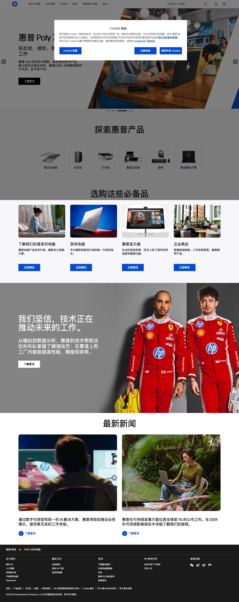

HP 主题
HP 的 Design.md 主题展示，围绕消费品牌、电商零售、品牌展示、移动端组织页面。
Consumer electronics catalog. White canvas with electric blue accent, angular chevron motifs.
消费品牌电商零售品牌展示移动端内容货架趣味互动

来源
- 来源
- getdesign.md
- 网站
- https://hp.com/
- 详情
- https://getdesign.md/hp/design-md
色板
#024ad8: #024ad8#0e3191: #0e3191#1a1a1a: #1a1a1a#296ef9: #296ef9#c9e0fc: #c9e0fc#ffffff: #ffffff#000000: #000000#292929: #292929#f7f7f7: #f7f7f7#e8e8e8: #e8e8e8#c2c2c2: #c2c2c2#636363: #636363
字体
display: Forma DJR Microbody: Forma DJR Micromono: ui-monospacehints: Forma DJR Micro,ui-monospace,Inter,Manrope,Roboto
圆角
control: 4pxcard: 16pxpreview: 16pxpill: 9999pxsource: design-md
间距
xxs: 4pxxs: 8pxsm: 12pxmd: 16pxlg: 20pxxl: 24pxxxl: 32pxsection: 80pxsource: design-md
使用建议
建议
- 建议：Reserve {colors.primary} for the primary CTA, link color, and {chevron-decoration} motif — at most twice per viewport。
- 建议：Set every headline in Forma DJR Micro at weight 500 with line-height 1.0 — resist the urge to bump weight at hero scale。
- 建议：Use {rounded.xl} (16px) for cards and photo frames; {rounded.md} (4px) for buttons and inputs — keep the two-tier split sharp。
- 建议：Pair white {colors.canvas} body bands with {colors.cloud} ({#f7f7f7}) alternating bands; let the gray do the breathing。
- 建议：Close every page rhythm with a dark-navy {colors.ink} slab — the "How can we help?" prelude + footer。
避免
- 避免：introduce secondary saturated colors outside {colors.primary} family + the {bloom-coral} sale-tag and {storm} printer-plan accents。
- 避免：apply heavy material shadows — depth is via color contrast (cloud vs. white) and Soft Lift only。
- 避免：round buttons above {rounded.md} (4px); a soft 8px+ button reads as a different brand。
- 避免：run Forma DJR Micro below 12px — small caption at 11px is the floor。
- 避免：use the chevron decoration as inline noise; it is a hero-only architectural element tied to the wordmark。
查看 DESIGN.md